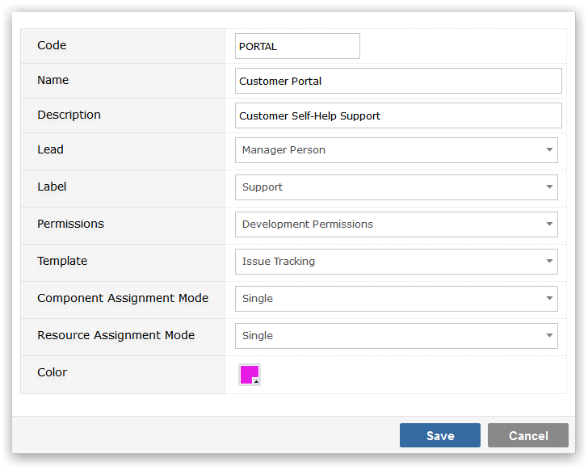

Creating Projects
Project Definitions
To create a new Project, click on the Add button, to edit an existing project's details, click on the Edit icon on the right hand side of the screen.

When creating/editing a project you will be prompted to provide
- Code a 10 digit (max) code by which your project will be known
- Name the descriptive name of this project, which will be shown on screen
- Description a long description that is mainly for reporting purposes
- Lead a dropdown list of Gemini users - select the project lead
- Label the group to which this project will belong (see above)
- Permissions the permission set to use for this project
- Template the Project Template on which this project should be based (Process, Workflow, Custom Fields etc.)
- Component Assignment Mode whether or not when selecting Components users can pick multiple Components
- Resource Assignment Mode whether or not when selecting Resources for tasks, users can pick multiple Resources
- Color a color code for the project, useful for identifying tasks that belong to a specific project in the Visual Planner, Calendar and other views
Click Save to create the project.

NoteAlthough all work items are prefixed by the project code this is not an intrinsic part of the key to the item. Items are uniquely numbered on a system-wide basis and because the project prefix is a display attribute items can be moved from project to project. If a support ticket with an id of HELP-901 (belongs to Project HELP) is moved to a Project DEV, it will have the key DEV-901. When moving items between projects the project prefix and data changes but the underlying numeric key remains intact thus keeping all existing linkages (attachments, comments, 3rd party connections etc.)